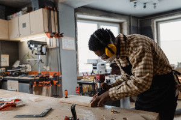

History
Before I started learning to become a developer, I had a couple of careers. While they ended up not working out for me in the long run, They did positively impact my life.
▸ Retail
Ah yes, the joys of retail... While my years working at my local Kroger affiliate came with its predictable headaches and irate customers, the lessons will last as long as the nightmares.
These lessons include, but are not limited to:
- The people on the ground level are not in charge of inventory and are not hiding things from you.
- It is best not to take tough customy own hands. I am by no means an artisanal woodworker, I have been able to make quite a few projects.
Some countries mandate that everyone must work in the military in some capacity. I believe everyone should work in retail at some point in their life. The experience of being on the associates side of a customer rant would hopefully prevent people from doing the same thing while they shop.
▸ Teaching
My first true career was becoming a high school teacher. Right after I got my bachelors degree in History, I enrolled in the Masters in Teaching program at the University of Washington. Throughout my 5 years of teaching I taught Special education in greater Seattle area. My class subjects ranged from Math, English, Science, Study Skills, and History.
I enjoyed many aspects of teaching and my students. My goal was to make classes that had an appropriate amount of rigor given the makeup of the class, and to have calm consistant environment for my students. While no teaching style works for every student, I found that mine did well even with some of the most challenging students. I did not inspire the students to all go on to be president like in the movies, but those who were receptive ended up being successful in my class while they struggled in others
In the end the stresses of teaching got to be too much for me. Even with the good experience and fulfilling work, having a clientel that mostly doesn't want to be there and having to fight just to get students to pay attention can wear a body out. Eventually, the weight of the long hours, daily stresses, and multiple types of classes grew too heavy.
▸ Plumbing
After my teaching career I wanted to try something completely different. I always respected people who worked in the trades and saw their skills as extremely valuable. While plumbing can stink sometimes, waits for laughter to calm down, the skills it gives you are always in need and hard to be completely replaced with technology.
Going from teaching to plumbing also required a large physical change from being a teacher. I have never been one who goes to the gym. However, I have always loved sports and physical activities that have a defined goal. So while it took some time, I eventually could keep up with the rest
I never did get fully licensed as a journeyman plumber before the birth of my daughter led to me being a stay at home dad, but I did earn the respect of the plumbers I worked with and frequently ended months as the top earning apprentice. This proved to myself that I could learn skills I wanted to even if they are completely new to me. This gave me the confidence to get into programming as a new career that would not have the long days and body wear that plumbing came with.

Hobbies
▸ Woodworking
While I am no longer plumbing, I still lmy own hands. I am by no means an artisanal woodworker, I have been able to make quite a few projects including:
- An over 300ft wooden fence around my house
- My current shop workbench
- My computer desk
- A toy box bench for my daughter
Especially when my work is all done on a computer, I find doing something offline is very important for my sanity. I highly recommend it.
▸ Video Games
While I do not play nearly as much as I used to, I still enjoy playing the occasional video game. Most of the games I play are multiplayer ones that I can play with my wife and family. My current favorites are:
- Monster Hunter
- Pokemon
- Magic the Gathering
▸ Reading
I have been an avid reader all my life. I will admit that I have not been able to read as much fiction while I am working on becoming a developer, but I am reading something every day. Sometimes it is coding articles, or sports articles, or books with my daughter, either way I am reading a story in one shape or another. My current favorite book series are:
- Hyperion
- Johnathan Strange and Mr Norrel
- Stormlight Archives